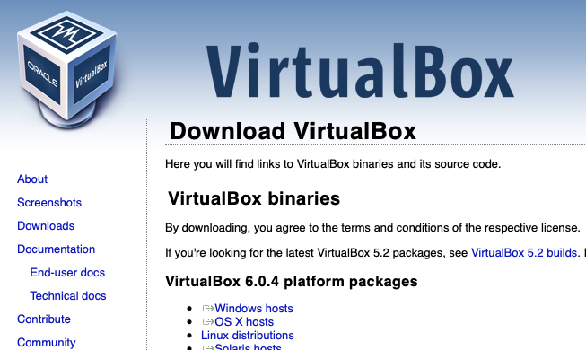
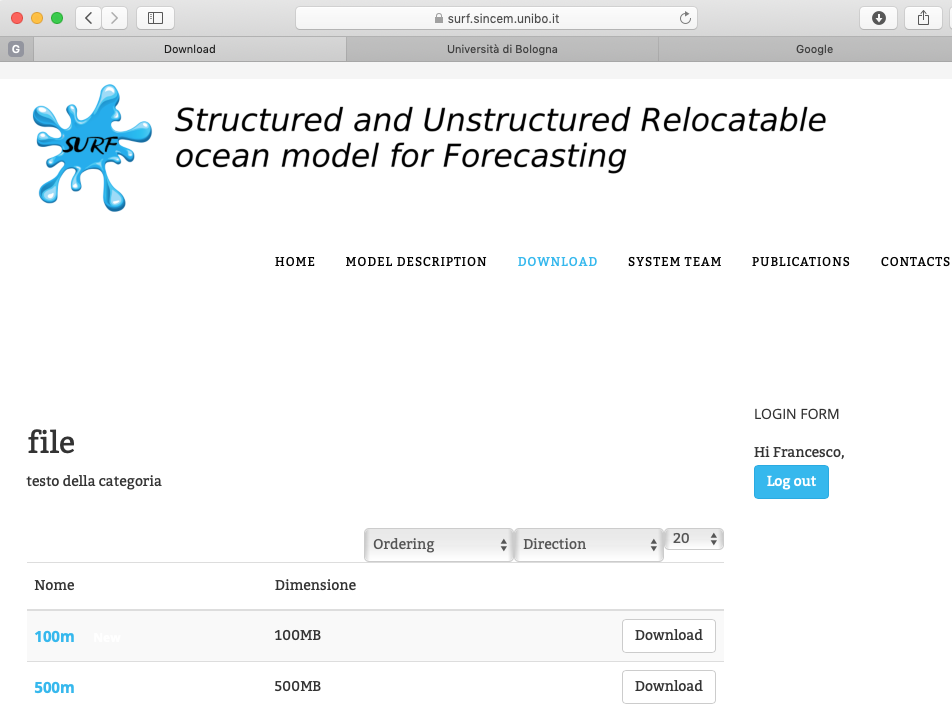
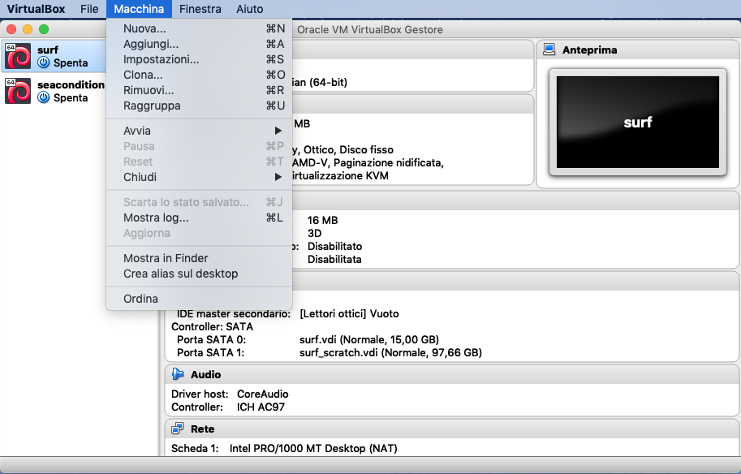
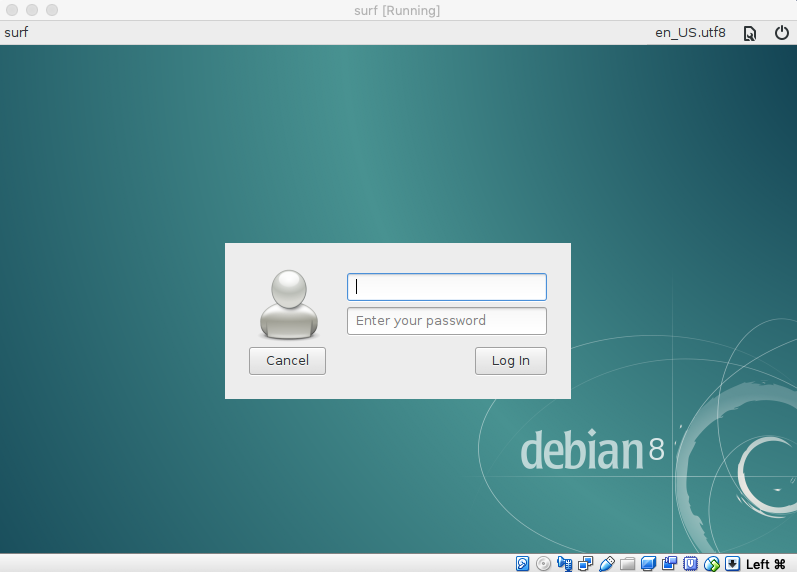
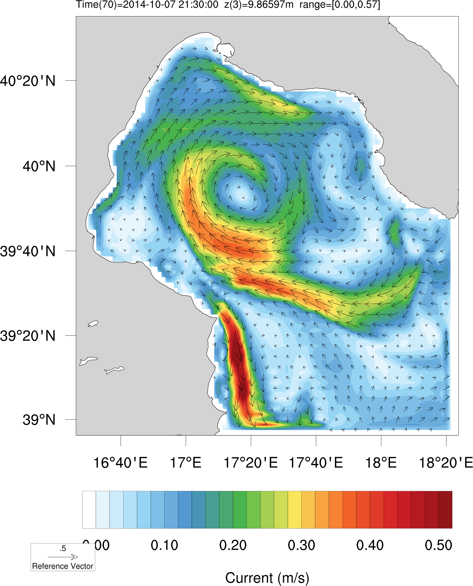
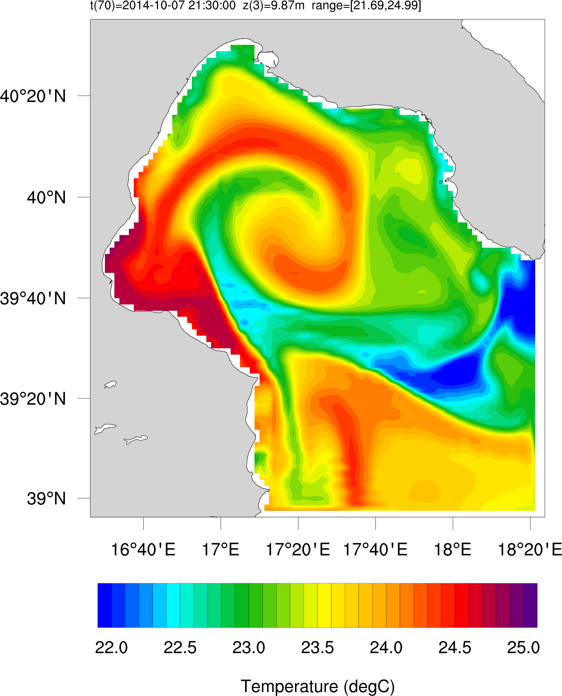
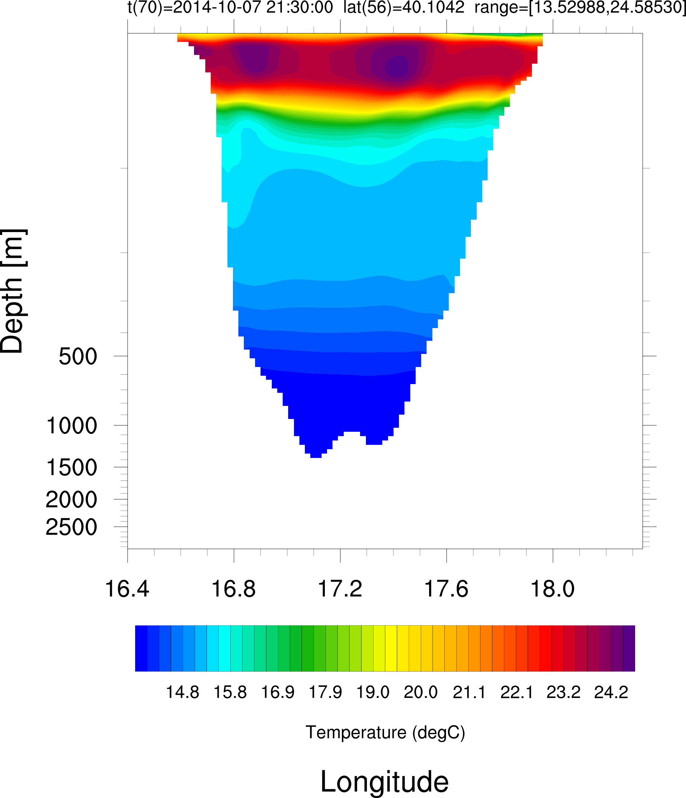

Quick Start Guide¶
This chapter describes how you can quickly get started with the SURF platform. We show how to download and install the SURF Virtual Machine and all the SURF packages. We describe how to compile the source code included. We present how to execute a case study experiment and view the results. Finally we show how the template user-configuration setup file can be modified in order to make a new different experiment or add a further higher resolution child model downscaling from the existing nested model.
See also the video tutorials available online here explain basic features of the SURF platform and designed for beginners who want to learn SURF step by step.
Download and Install SURF Virtual Machine¶
The SURF platform will be provide as a Virtual Machine (VM). It is packaged and distributed as a GZIP Compressed Tar Archive file (tar.gz file suffix) which contains two VDI (VirtualBox Disk Image) files:
surf.vdifor the operating systemsurf_scratch.vdifor source code files, datasets sample, and experiments.
The general scheme adopted to manage the versions provides that the releases contain in the name indications of the version in the format:
surf_vm_VERSION.tar.gz
where VERSION is a number (e.g. surf_vm_2.04.tar.gz for the current version). The instructions below explain how to download, install and configure the SURF VM in Oracle VirtualBox
Navigate to https://www.virtualbox.org/ and click on Downloads button.
Choose the |

Fig. 9 Downloads Virtual Box¶ |
Download the current version (v2.04) of the SURF virtual machine from
SURF web-page and extract it in your VirtualBox directory
( tar -zxvf surf_2.04.tar.gz You need to create an account and log in to have access to downloads. |

Fig. 10 Downloads SURF Virtual Machine¶ |
Open the VirtualBox software. From the menu, choose Machine > add and navigate to the .vbox file.
This will add the Virtual Machine |

Fig. 11 Add SURF-VM in VirtualBox¶ |
To start the VM surf, you can double-click on its entry in the machines manager or select its entry and press the Start button on the top. A window opens. The VM Login should look like the right figure. In the login dialog box enter:
You are now logged into the VM. |

Fig. 12 Add SURF-VM in VirtualBox¶ |
Changing Configuration on the SURF Virtual Machine¶
By default, the VM surf is configurated as in table Table 1. You can keep all defaults parameters or if it is not adequate for your application you can change settings
To change the configuration settings, you right-click the surf virtual machine’s name and choose Setting. You can change setting such as: (1) increase/decrease the number of cores based on your performance desires, (2) increase/decrease the number of GB of RAM allocated to your VM according to the size of you computational domain, (3) add a 2nd network adapter e.g. Host-Only adapter so that the Host can have direct connection with the Guest. |

Fig. 13 Add SURF-VM in VirtualBox¶ |
Enlarge the virtual disk in order to storage more data. VBoxManage modifyhd YOUR_HD.vdi
–resize SIZE_MB
|

Fig. 14 Enlarge the virtual disk¶ |
Parameter |
Description |
Values |
|---|---|---|
Name |
Name given the VM |
surf |
Guest OS |
Operating system running on this VM |
Debian Linux |
Memory |
Amount of memory available to this VM |
2 [GB] |
Cores |
Number of CPU cores being used by this VM |
2 |
Disk Capacity |
Total disk capacity available to this VM |
40 [GB] |
Network Adapters |
Number of network adapters available to this VM |
1 |
IP Address |
IP address assigned to the VM |
x |
Download and Install SURF packages¶
Once logged in, open a new terminal windows and go to the directory /scratch. The scratch directory
follows the directory structure as shown in fig. xx. The VM you have installed does not contain the SURF
packages (source codes and datasets) and you need to download and install them. The SURF packages are
packaged and distributed as a GZIP Compressed Tar Archive file (tar.gz file suffix). The general scheme
adopted to manage the versions provides that the releases contain in the name indications of the version in
the format:
packageName_VERSION.tar.gz
where VERSION is a number (e.g. surf_nemo_1.01.tar.gz for the current version of the surf_nemo package). The instructions below explain how to install the package in the VM:
Once logged in the VM surf, download the current version of the SURF-NEMO (surf_nemo_1.01.tar.gz) and SURF-DATASETS (surf_datasets_1.01.tar.gz) packages directly from the SURF web-page and save it in the directory
/scratch/surf/surf_install/releases/.Go to the directory
/scratch/surf/surf_install/releases/and run the installation bash scriptinstall.shfollowed by the package name. For the SURF-NEMO packages type:install.sh surf_nemo_1.01.tar.gz
For the SURF-DATASETS packages type:
install.sh surf_datasets_1.01.tar.gz
The installation process will extract the archive in the directory
/scratch/surf/surf_nemo/and/scratch/surf/surf_datasets/, respectively, and will create a symbolic link current in this directory that points to the extracted folder.
For a detailed description of the directory structure and contents of each packages refer to the Appendix A.
Compiling the source code¶
After the installation of the SURF-NEMO package is finished, you need to compile the source codes in order to create the executable files needed to perform specific tasks. The executable files should not be recreated unless you need to modified the source code. Compilation is performed with the Unix/Linux make utility using the following tools: (1) fortran 90 compiler, (2) C-preprocessor cpp, (3) a compiled MPI library for simulations in parallel mode. (4) a compiled netCDF library to read and write data in portable netCDF format. All these tools are already present and compiled in the SURF platform.
To compile the source codes go to the directory /scratch/surf/surf_nemo/current/scripts/ and run
the compilation bash script compile.sh followed by the package name (or by the word ’all’ to compile
all the packages):
cd /scratch/surf/surf_nemo/current/scripts ; ./compile_codes.sh all
Compilation could take a few minutes and it will create the executable files for each program present in the SURF-NEMO package.
Running the case study: Gulf of Taranto¶
As case study we implement the SURF platform in the Gulf of Taranto in the northern Ionian Sea (fig xx). The nesting simulation start on 5 October 2014 at 00:00 and run until 7 October 2014 at 24:00. In order to execute this case study experiment, you can follow these steps:
Download the input datasets (gulfTaranto_20141005.tar.gz) of this case study directly from the web-repository (https://surf.sincem.unibo.it) and extract it in the directory
/scratch/surf/indata_offline/tar -zxvf gulfTaranto_20141005.tar.gz
Note If you want to change the local repository path to some other location of your choice make sure to change the path in the configuration file.
Create a new folder in the directory
/scratch/from_GUI/and let’s call it gulfTaranto_20141005. This is the Experiment ID name which uniquely identifies the experiment.cd /scratch/from_GUI/ ; mkdir gulfTaranto_20141005
Copy the template configuration file
/scratch/surf/surf_nemo/current/setParFree.jsonin the directory/scratch/from_GUI/gulfTaranto_20141005/which contains the configuration for this case study.necd ; cp setParFree.json /scratch/from_GUI/gulfTaranto_20141005/After that, from the directory /scratch/surf/surf_nemo/current/scripts/, you just need to execute the julia script run_exp.jl followed by the experiment ID gulfTaranto_20141005
julia run_exp.jl gulfTaranto_20141005
This will create the folder gulfTaranto_20141005 in the directory /scratch/surf/experiments/ with a directory tree as in fig.B.1 (refer to the Appendix A for more details)
…..enables the execution of the CHILD-MESHMASK GENERATION task … enables the execution of the ATMOSPHERIC-DATA-REGRIDDING task … enables the execution of the OCEAN-IC-DATA-REGRIDDING phase … enables the execution of the OCEAN-BC-DATA-REGRIDDING phase … enables the computation/copy of WEIGHT-FILEs for input_fields REMAPPING (if lrun_regridPre=True) … enables the execution of the NEMO code. The is shown in box 6.2. |
{"id":"A001","title":"set_lrun",
"items": [
{"name": "lrun_childMeshMask",
"value": "True"
},
{"name": "lrun_regridPreAtm",
"value": "True"
},
{"name": "lrun_regridPreOceIC",
"value": "True"
},
{"name": "lrun_regridPreOceBC",
"value": "True"
},
{"name": "lrun_regridPreWeights",
"value": "True"
},
{"name": "lrun_ocean",
"value": "True"
}
]
}
|
Post-processing the results¶
View the results with various free software visiualisation tools
You have some software for doing post processing. In this manual, we will use the free software packages NcView, NCL-NCAR Command Language. However, it is very well possible to use other (free or commercial) graphic software such as Pynoply or several scripting languages such as julia, Python, IDL, Matlab, as long as they can read the netCDF format.
Visualizing the results with Ncview¶
Ncview is a tool for visualizing netCDF data files. It is very easy to use, because of its graphical user interface. However, its possibilities are limited. Typically you would use ncview to get a quick and easy, push-button look at your netCDF files. You can view simple movies of the data, view along various dimensions, take a look at the actual data values, change color maps, invert the data, etc. In order to start this program type ncview followed by the filename of the dataset you want to visualize, example type the following command
ncview SURF_1h_20141006_20141006_grid_T.nc
An example of the user interface in NcView is given in figure Fig. 15
{kind=link}
Analyzing and Visualizing results using NCAR graphic packages¶
NCAR Graphics is a collection of graphics libraries that support the display of scientific data. One possible interfaces available for visualizing data with these libraries is with the NCAR Command Language (NCL), an open source interpreted programming language, developed at NCAR and designed for the analysis and visualization of geoscientific data.
The SURF-NEMO package include, as postprocessing, a suite of NCL functions to visualize the input/output datasets, compare the child/parent fields, compare the simulation result with insitu or satellite datasets and convert datasets.

Fig. 16 This is the caption of the figure.¶ |

Fig. 17 This is the caption of the figure.¶ |

Fig. 18 This is the caption of the figure.¶ |
In order to Post-processing the results of an existing experiment, you need to execute the julia script
run_postProc.jl followed by the experiment ID. Example for the case study experiment type the following
command:
julia run_postproc.jl gulfTaranto_20141005
…..enable/disable the plotting of the user defined Domains … enable/disable the plotting of the Indata Bat,Atm,OceIC,OceBC fields … enable/disable the plotting of the Extrapdata Atm,OceIC,OceBC fields … enable/disable the plotting of the Regriddata Bat,Atm,OceIC,OceBC,OceBCbdy fields … enable/disable the plotting of the Outdata Ocean fields … enable/disable the plotting of the child VS. parent Ocean fields … enable/disable the plotting of the surf VS. ctd Ocean fields … enable/disable the plotting of the surf VS. mooring Ocean fields … enable/disable the plotting of the surf VS. ferrybox Ocean fields … enable/disable the plotting of the surf VS. satellite Ocean fields … |
{"id":"B000","title":"set_lrun_post",
"items": [
{"name": "lrun_visIndata",
"value": "True"
},
{"name": "lrun_visExtrapdata",
"value": "True"
},
{"name": "lrun_visRegriddata",
"value": "True"
},
{"name": "lrun_visOutdata",
"value ": "True"
},
{"name": "lrun_chlVSpar",
"value": "True"
},
{"name": "lrun_surfVSctd",
"value": "True"
},
{"name": "lrun_surfVSsat",
"value": "True"
},
{"name": "lrun_surfVSmooring",
"value": "True"
},
{"name": "lrun_surfVSferrybox",
"value": "True"
}
]
}
|
…..enable/disable the plotting of the Child MeshMask fields … enable/disable the plotting of the Bathymetry fields … enable/disable the plotting of the Atmspheric fields … enable/disable the plotting of the Initial Condition Ocean fields … enable/disable the plotting of the Open Boundary Condition Ocean fields … enable/disable the plotting of the Open Boundary Condition Ocean fields … enable/disable the plotting of the Output Ocean fields … |
{"id":"B001","title":"set_visual_lplot",
"items": [
{"name": "lplotMesh",
"value": "True"
},
{"name": "lplotBat",
"value": "True"
},
{"name": "lplotAtm",
"value": "True"
},
{"name": "lplotOceIC",
"value ": "True"
},
{"name": "lplotOceBC",
"value": "True"
},
{"name": "lplotOceBCbdy",
"value": "True"
},
{"name": "lplotOceOut",
"value": "True"
}
]
}
|
Make a new experiments¶
If you want to make a new experiment (e.g. greenlandFjord_20170201), you can just copy the template user
configuration file (setParFree.json) in the new folder /scratch/from_GUI/greenlandFjord_20170201/ and
setting it up according to your needs.
Once your file is ready, from the directory /scratch/surf/surf_nemo/current/scripts/, you need to
execute the julia script run_exp.jl followed by the experiment ID greenlandFjord_20170201 (as we see
in sec. xx).
In principle you can simply use the template model and modify it to your needs, and not be too much
concerned with the input files they create. But our advice is never to use the template model as black boxes.
It is therefore important to understand how the codes work, which options they have and how their input
files are structured.
Multiple downscaling experiments¶
You can produce a very high resolution model new multiple-nest experiment or downscaling from an existing
experiment …
From an exisiting experiment (e.g. gulfTaranto_20141005) if you want to continue downscaling and generate
a new higher-resolution nest (NEST2), you need to modify the user configuration file placed in a
directory /scratch/surf/experiments/gulfTaranto_20141005/